Dynamically adds common HTML-specific theming to a ggplot2 chart. It depends on the current knitr output format whether the additional HTML-specific theming is actually added or not.
Usage
ggplot2_theme_html(
.color_text = pal::pkg_config_val("plot_color_body"),
.color_bg = pal::pkg_config_val("plot_color_bg"),
.color_grid = pal::pkg_config_val("plot_color_grid"),
...
)Arguments
- .color_text
Text color to use for all text elements (
ggplot2::element_text()) when the knitr output format is HTML.- .color_bg
Background color to use when the knitr output format is HTML.
- .color_grid
Grid color to use when the knitr output format is HTML.
- ...
Further arguments passed on to
ggplot2::theme()when the knitr output format is HTML.
Value
An object of class theme.
Details
Note that ggplot2_theme_html() must be evaluated during knitting to work properly.
See also
Other plot theming functions:
ggplot2_geom_defaults(),
ggplot2_theme(),
plotly_layout()
Examples
sysfonts::font_add_google(name = "Alegreya Sans")
showtext::showtext_auto()
ggplot2::ggplot(data = mtcars,
mapping = ggplot2::aes(x = mpg,
y = cyl)) +
ggplot2::geom_point() +
salim::ggplot2_theme() +
salim::ggplot2_theme_html()
